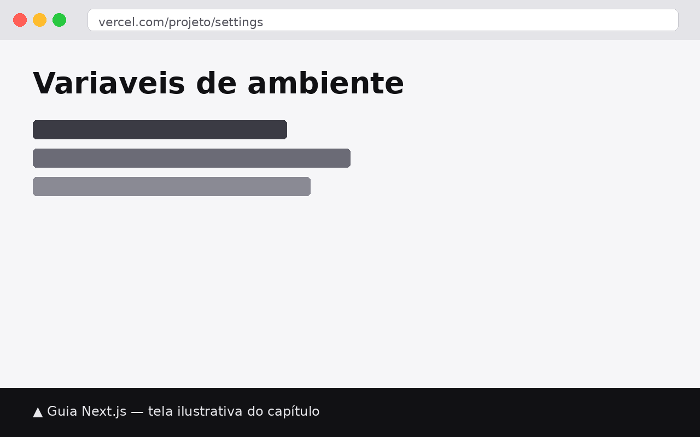

Variáveis de ambiente: .env, NEXT_PUBLIC_ e secrets
A Ana cometeu o erro clássico: colocou a chave da API de pagamento dentro do código, commitou no GitHub e o bot dela achou a chave em 40 segundos. Nesta aula você aprende a regra de ouro do Next.js: só variáveis com prefixo NEXT_PUBLIC_ vão para o navegador — todo o resto fica só no servidor, e o que é segredo mora no painel da Vercel, nunca no repositório.
- Os arquivos
.env,.env.local,.env.productione a ordem de prioridade .env.localno.gitignore;.env.examplecommitado (sem valores reais)NEXT_PUBLIC_*: embutida no bundle do client (qualquer visitante vê — use só para coisas públicas)- Sem o prefixo: só no servidor (Server Components, Server Actions, route handlers) —
process.env.STRIPE_SECRET_KEY - Variáveis na Vercel por escopo (Production/Preview/Development) e
vercel env pull - Validação com
@t3-oss/env-nextjspara falhar cedo no build
A ideia: o crachá público e a chave do cofre
Toda empresa tem dois tipos de crachá: o crachá de visitante, que pode ser lido por qualquer um na portaria (nome, foto, empresa) — e a chave do cofre, que fica com o gerente e nunca sai do bolso. No Next.js, as variáveis NEXT_PUBLIC_* são o crachá de visitante: na hora do build, o valor é embutido no JavaScript que vai para o navegador — qualquer pessoa pode abrir o DevTools, ir em Sources e ler. Já as variáveis sem prefixo são a chave do cofre: ficam só no servidor, onde o navegador nunca chega.
A regra da Ana ficou simples: se o valor pode ser público (URL da API, nome do app, chave pública do Stripe), pode ter NEXT_PUBLIC_. Se é segredo (chave secreta do Stripe, token do banco, senha de SMTP), não tem prefixo e só é lida no servidor — em Server Components, Server Actions e route handlers (app/api/.../route.js). Um detalhe importante: mudar uma variável NEXT_PUBLIC_ exige rebuild, porque o valor foi embutido no código; mudar uma de servidor não (só reiniciar/redeploy).
Os arquivos .env e quem lê o quê
# COMMITADO no git — só os nomes, sem valores reais (o time sabe o que existe) NEXT_PUBLIC_API_URL= NEXT_PUBLIC_APP_NOME=Loja da Ana DATABASE_URL= STRIPE_SECRET_KEY=
# NUNCA commitado (está no .gitignore) — seus valores reais de desenvolvimento NEXT_PUBLIC_API_URL=http://localhost:3001 DATABASE_URL=file:./dev.db STRIPE_SECRET_KEY=sk_test_51ABC…
node_modules/ .next/ .env.local .env*.local *.log
// Server Component: lê as DUAS (servidor) — o navegador nunca vê process.env sem NEXT_PUBLIC_
export default function Home() {
const nome = process.env.NEXT_PUBLIC_APP_NOME; // público (vai pro client se usado num client component)
return <h1>{nome}</h1>;
}
// Route handler (servidor): aqui dá para ler o segredo com segurança
import Stripe from 'stripe';
const stripe = new Stripe(process.env.STRIPE_SECRET_KEY); // só existe no servidor ✅
export async function POST() {
const session = await stripe.checkout.sessions.create({ /* … */ });
return Response.json({ url: session.url });
}
'use client';
// Client Component: SÓ enxerga as NEXT_PUBLIC_ (as outras vêm undefined aqui)
export default function Configuracao() {
return <p>API pública: {process.env.NEXT_PUBLIC_API_URL}</p>;
// process.env.STRIPE_SECRET_KEY aqui seria undefined — e se tentasse com NEXT_PUBLIC_,
// o segredo vazaria no bundle do navegador ❌
Na Vercel: escopos e pull local
# no painel: vercel.com → projeto → Settings → Environment Variables # marque em quais escopos cada variável vale: ☑ Production ☑ Preview ☑ Development # puxar as variáveis de produção para o .env.local (ignorado pelo git): vercel env pull .env.local
Missão: no código abaixo, a Ana guardou a chave secreta numa variável sem prefixo (seguro no servidor) e a URL da API numa variável pública. Renomeie a variável pública para começar com NEXT_PUBLIC_ (ex.: NEXT_PUBLIC_API_URL) — é a única que pode ser lida no navegador. Rode para ver quais variáveis "aparecem" no client. Depois clique em Verificar missão.
const config = {
// o que o NAVEGADOR pode ver (vai pro bundle do client):
apiUrl: 'http://localhost:3001',
// o que só o SERVIDOR vê:
stripeSecret: 'sk_test_51ABC…',
};
function App() {
const publico = Object.keys(config).filter(k => k.startsWith('NEXT_PUBLIC_'));
return (
<div>
<h1>🔐 Variáveis</h1>
<p>No client, dá para ler: {publico.length ? publico.join(', ') : '(nada ainda)'}</p>
<p>No servidor, dá para ler: apiUrl e stripeSecret</p>
</div>
);
}const config = {
NEXT_PUBLIC_API_URL: 'http://localhost:3001', // ✅ público de propósito
STRIPE_SECRET_KEY: 'sk_test_51ABC…', // ✅ só servidor
};
function App() {
const publico = Object.keys(config).filter(k => k.startsWith('NEXT_PUBLIC_'));
return (
<div>
<h1>🔐 Variáveis</h1>
<p>No client, dá para ler: {publico.length ? publico.join(', ') : '(nada ainda)'}</p>
<p>No servidor, dá para ler: NEXT_PUBLIC_API_URL e STRIPE_SECRET_KEY</p>
</div>
);
}
Quando dá errado
.env.local no git, o valor fica no histórico para sempre — mesmo apagando depois. A correção: trocar a chave no provedor (Stripe/Google), adicionar .env*.local no .gitignore, e limpar o histórico com git filter-repo (ou recriar o repositório).$ git log --all --full-history -- .env.local # mostra o vazamento $ grep -r "sk_test_51ABC" .next/static/ # confirma que foi pro bundle → revogue a chave, troque por outra, e NUNCA use NEXT_PUBLIC_ em segredo.
process.env.NEXT_PUBLIC_API_URL vem undefined no navegador depois do deploy. Quase sempre a variável foi setada na Vercel depois do último build — como o valor é embutido no build, precisa fazer um redeploy (ou a variável foi setada sem o prefixo NEXT_PUBLIC_):console.log(process.env.NEXT_PUBLIC_API_URL) // undefined no client → Vercel → Settings → Environment Variables → confira o nome e o escopo → depois: Deployments → … → Redeploy (o build embute a variável nova)
Exercícios
Quais variáveis chegam no navegador (client)?
A chave secreta do Stripe deve ficar:
Qual arquivo vai para o git com os nomes das variáveis, sem valores?
Complete o prefixo que leva a variável para o client:
Complete o que deve entrar no .gitignore para proteger os segredos locais: